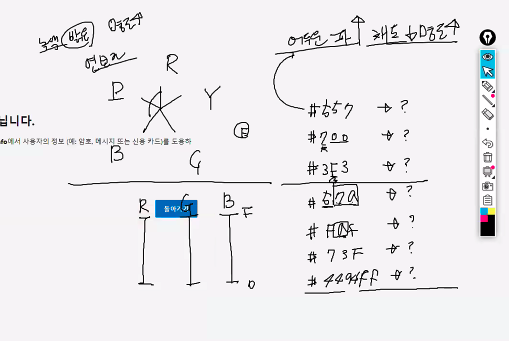

RGB랑 HSL 이해하기
RGB
- r은 red, g는 green, b는 blue를 의미! 이 3가지의 색상을 조합해서 모든 색을 만들어 낼 수 있다는 것이 기본적인 원리.
- example: cf. 개발자 검사 열고 볼 것!!
- 쌤 설명 참고:

HSL
- 색의 3대 요소: 색상(hue), 채도(saturation), 명도(lightness):
Tip! 컬러를 HSL로 읽을 때는 이유 불문하고 순서 바꿔서 뒤에서 부터 읽어주기!
- 색상:
순수한 의미의 색을 의미. 색상은 채도나 명도와 상관없이 색을 구분할 수 있게 하는 성질을 의미한다.
- 채도:
색의 맑고 탁한 정도. 맑을수록 "채도가 높다"고 말한다.
- 명도:
색의 밝고 어두운 정도. 밝을 수록 "명도가 높다"고 말한다.
명도가 높으면 (100%에 가까우면) 하얀색이 되고, 명도가 낮으면 (0%에 가까우면 가까울수록) 검은색이 된다.
참고 사이트 click!